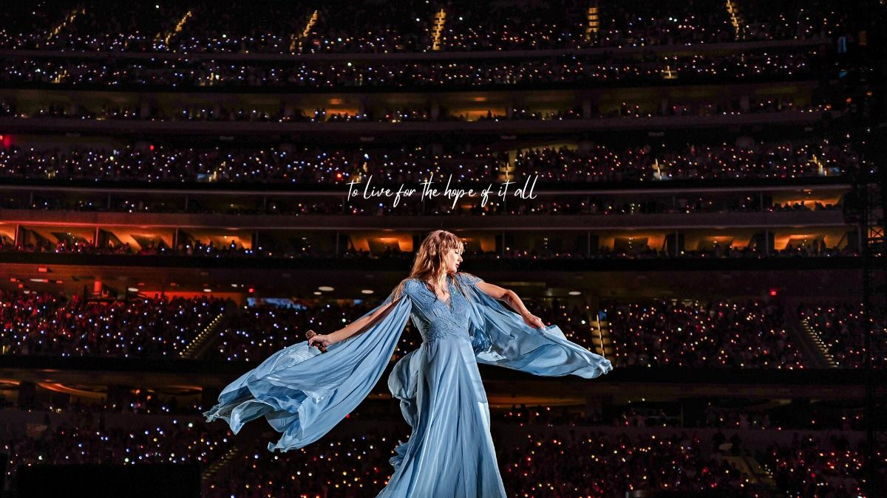
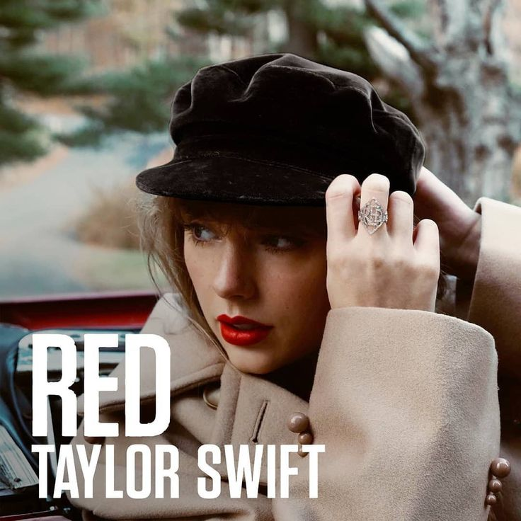
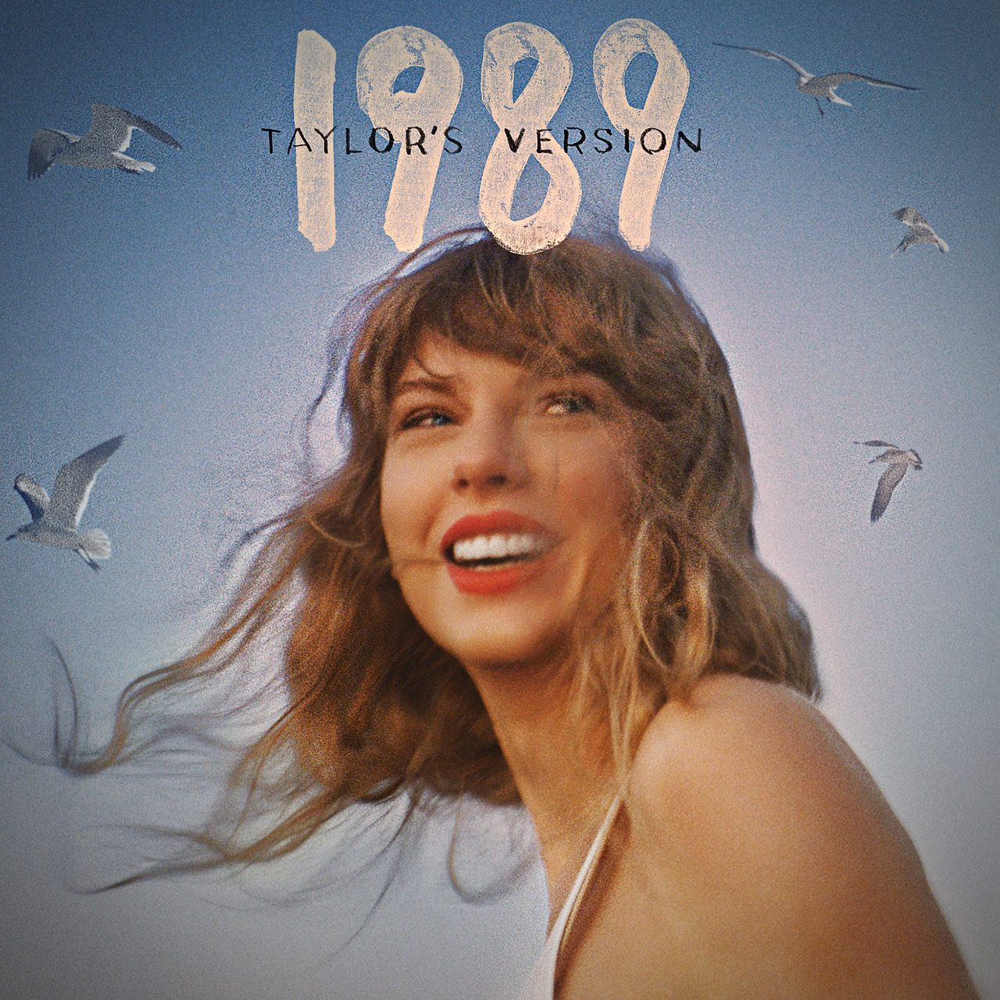
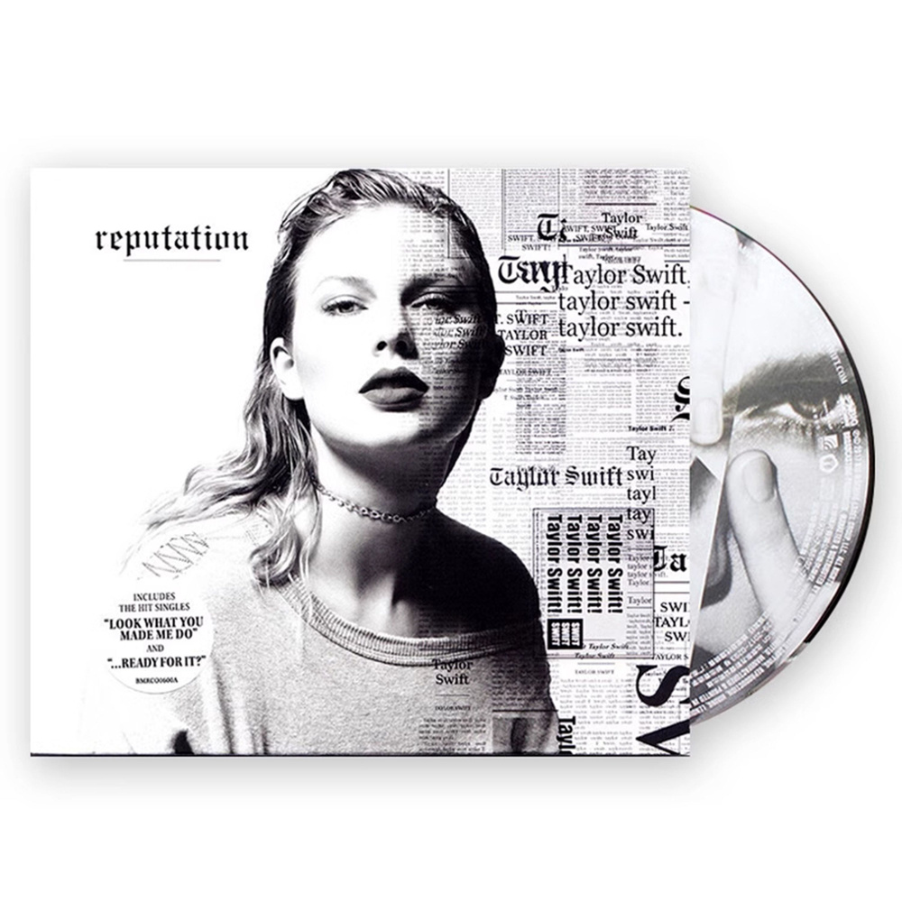
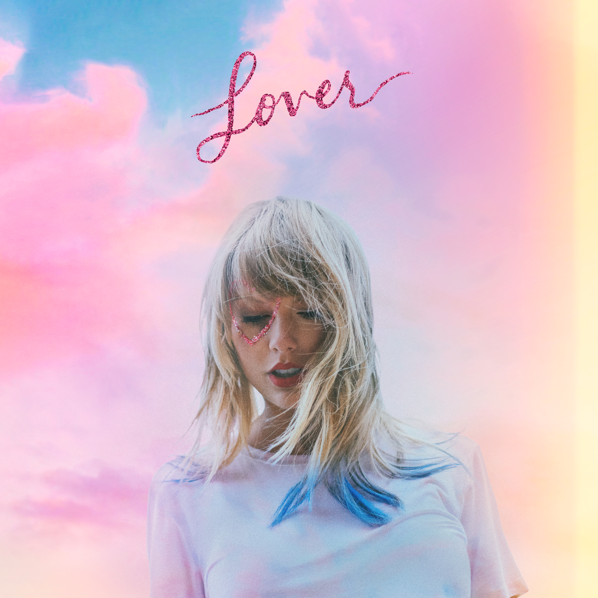

Beginning
Taylor began her career as a country singer-songwriter, introducing herself through personal storytelling and songs inspired by her experiences.
The Eras Tour celebrates Taylor Swift's musical journey by bringing together different chapters of her career into one unforgettable experience.
Explore the Journey
A tour created to celebrate the different eras of Taylor Swift's musical career.
The Eras Tour began on March 17, 2023. Instead of focusing on only one album, the tour was designed around the different musical eras of Taylor Swift's career.
Each era has its own music, visual style, costumes, and atmosphere. Together, they create a celebration of Taylor's growth as a songwriter and performer.
The tour also required extensive preparation. Taylor described the performance as one of the most demanding tours she had ever done.
Different stages of her career show how her music and identity continued to develop.
Taylor began her career as a country singer-songwriter, introducing herself through personal storytelling and songs inspired by her experiences.
Across different albums, Taylor experimented with new sounds, visuals, and songwriting styles while continuing to develop her artistic identity.
The Eras Tour brings these different chapters together, allowing audiences to experience the evolution of Taylor's music in one performance.
A look through the albums represented by Taylor's different eras.
The beginning of Taylor's musical journey.
An era known for its youthful storytelling and romance.
A deeply personal album written entirely by Taylor.
A colorful era exploring love, heartbreak, and change.
A major shift toward pop music and a new sound.
A darker and more dramatic chapter of Taylor's career.
A colorful era centered around love and optimism.
A softer and more fictional storytelling direction.
A continuation of the intimate storytelling style.
A reflective album exploring thoughts and memories.
A newer chapter in Taylor's songwriting journey.
Four eras that represent different sides of Taylor Swift's musical and visual evolution.

The Red era explores intense emotions, changing relationships, and the experience of growing through love and heartbreak.

1989 marked an important transition into pop music, creating a bright and energetic era with a distinct visual identity.

Reputation introduced a darker and more dramatic atmosphere while exploring themes of identity, perception, and personal relationships.

Lover brought a colorful and softer visual style, focusing on love, hope, happiness, and personal expression.
A reflection from Taylor about the work behind The Eras Tour.
“I knew this tour was harder than anything I’d ever done before by a long shot.”
— Taylor Swift, TIME interview, 2023
The statement reflects the amount of preparation and physical effort required for The Eras Tour. The performance brought together songs and memories from different periods of her career, making the tour both physically demanding and personally meaningful.
The tour became a celebration of Taylor Swift's career and connection with her audience.
The tour brought together songs from multiple albums, allowing fans to experience different stages of Taylor's musical development.
The Eras Tour created a shared experience for fans, connecting people through songs, memories, and different eras.
The scale of the tour demonstrated the continuing cultural impact of Taylor Swift's music and career.
References used for the information presented on this page.
Official archive containing information about Taylor Swift's different musical eras and releases.
Visit Official ArchiveTIME's 2023 interview with Taylor Swift discussing her career, music, preparation, and The Eras Tour.
Read the InterviewFrom the beginning of her career to The Eras Tour, every chapter represents a different part of Taylor Swift's musical journey.
Back to Top